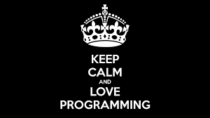
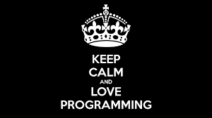
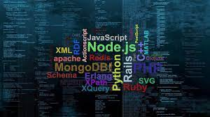
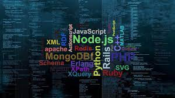

Home
About
My Profile
PERSONAL INFO
I'm Muriithi Virginia.
A product designer based in Nairobi.
Aged 18 years old inspired
to be the best world's programmer!!!!!!!

MY FACTS
~ I'm not a great programmer, am just a good programmer with great habits
~Coding like poetry should be short and concise.
~It’s not a bug; it’s an undocumented feature.
~First, solve the problem. Then, write the code.
~Code is like humor. When you have to explain it, it’s bad.
~Make it work, make it right, make it fast.
~Clean code always looks like it was written by someone who cares.
~Of course, bad code can be cleaned up. But it’s very expensive.
~Programming is the art of algorithm design and the craft of debugging errant code.
~Programming today is a race between software engineers striving to build bigger and better idiot-proof programs and the Universe trying to produce bigger and better idiots. So far, the Universe is winning.
~Any fool can write code that a computer can understand. Good programmers write code that humans can understand.
~Experience is the name everyone gives to their mistakes.
~Programming is the art of telling another human being what one wants the computer to do.
~Confusion is part of programming.
~No matter which field of work you want to go in, it is of great importance to learn at least one programming language.
How easy it is.....


 

 

"NEVER DREAM FOR SUCCESS........
BUT WORK FOR IT.....
BECAUSE THE FUTURE DEPENDS ON WHAT YOU DO!!!!!!...